3.30.2017 (星期四)
今天的行程十分悠閒, 早上乘巴士往離酒店較遠的神奇之路遊覽, 然後返回濟州市區內四處閒逛。經過多日來的緊湊行程, 今日盡量輕鬆一些, 以迎接明白展開的第二部份行程。
早上六時三十分起床, 梳洗完畢, 乘電梯往酒店二樓餐廳吃自助早餐。餐廳十分寬敞舒適, 食物也十分豐富。昨天的晚餐吃得並不太飽, 今早盡量補充體力。
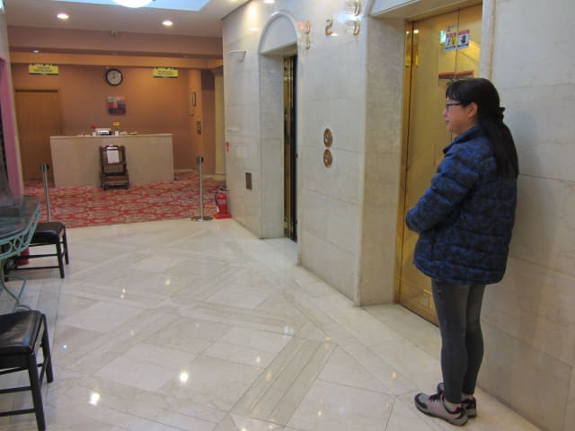
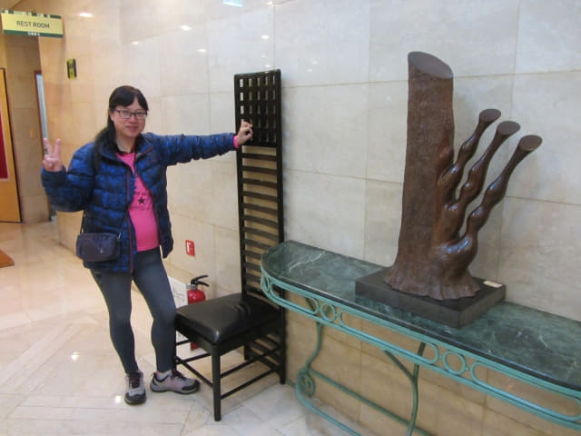
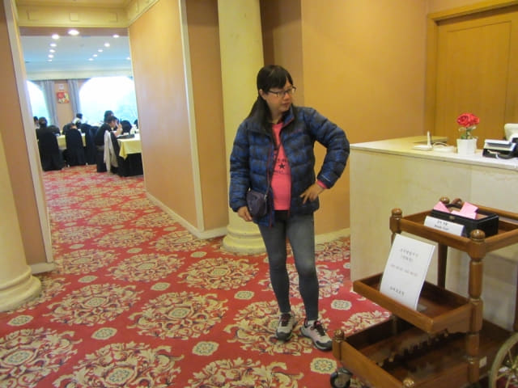
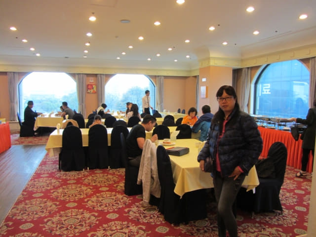
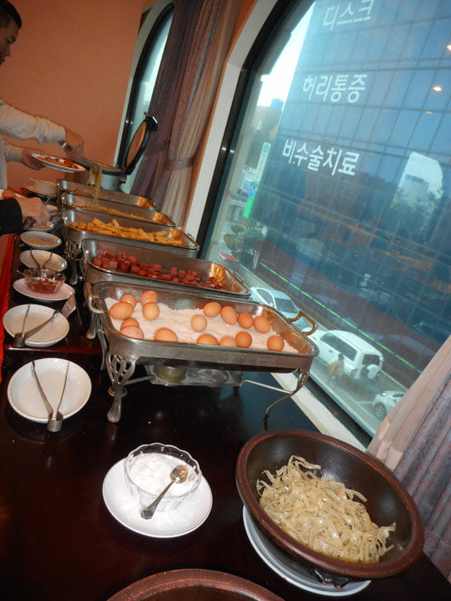
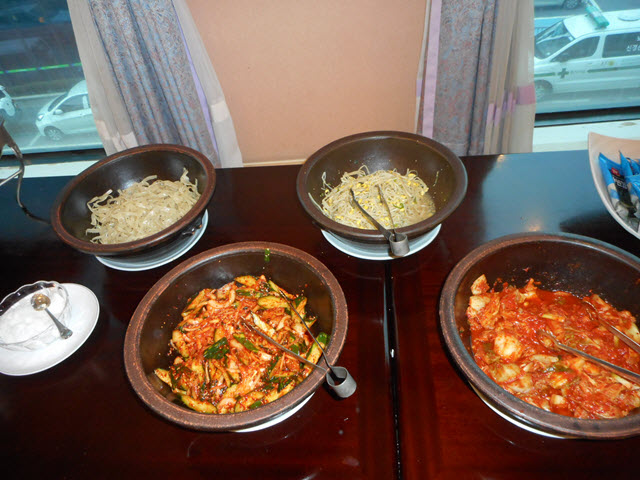
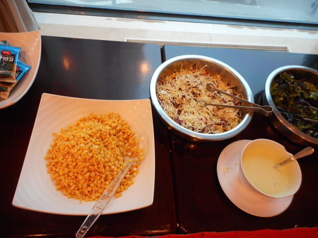
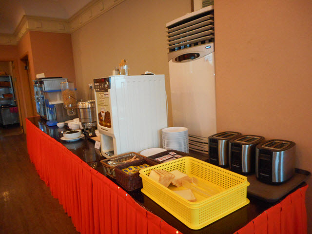
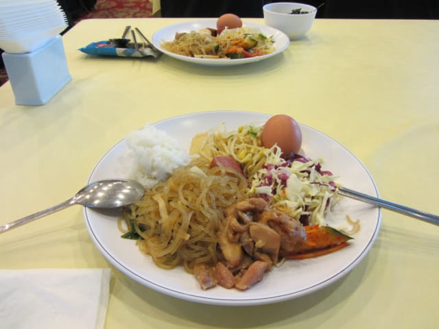
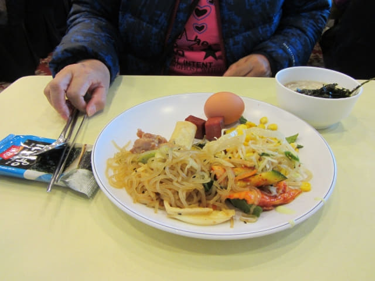
用完早餐, 返回房間收拾一些隨身攜帶的用品及旅遊資料, 於上午八時五分開始今天的行程。今天第一個目的地是神奇之路 (신비의도로 Mysterious Road)。神奇之路離酒店頗遠, 需要乘巴士前往。
「관덕정」巴士站乘70號巴士往神奇之路
走出酒店, 轉左走不到一分鐘便來到「관덕정」巴士站, 準備搭乘 70號巴士往神奇之路。
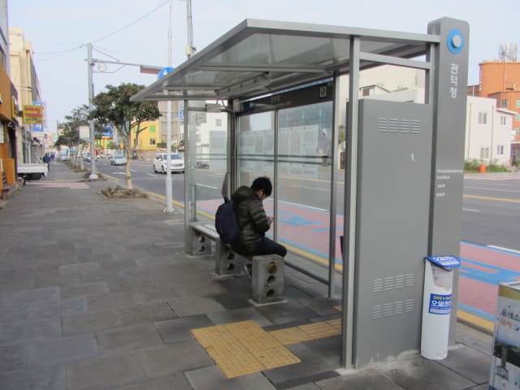
巴士站有70號巴士的時刻表, 估計約八時四十分才到站。
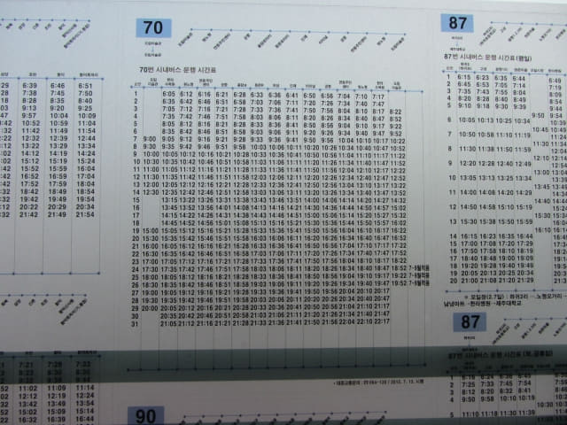
濟州牧官衙 (제주목관아)
看見離巴士到站足足有半小時, 便沿斑馬線走到巴士站對面的濟州牧官衙 (제주목관아)外逛逛。
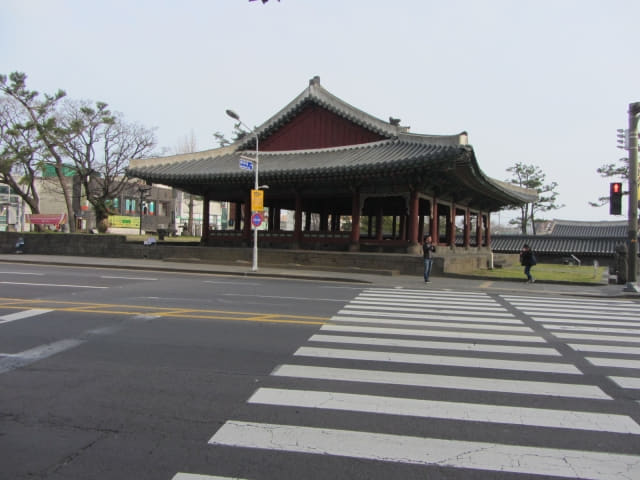
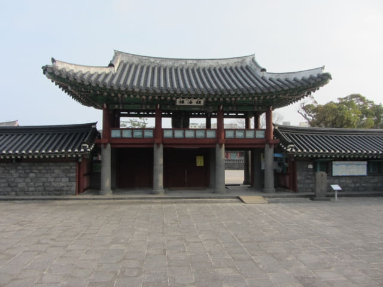
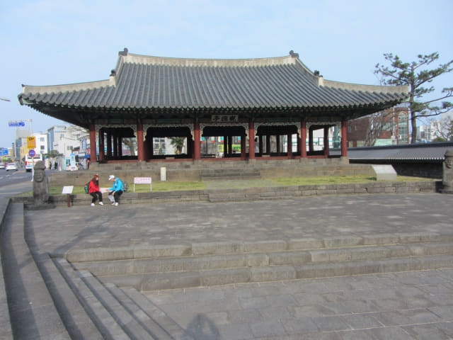
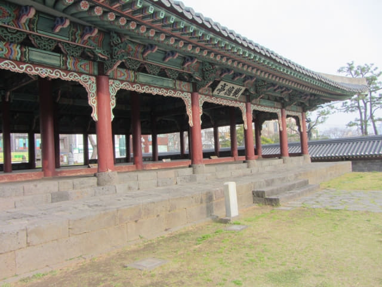
我們下榻的濟州島羅波羅酒店, 外表十分豪華的。
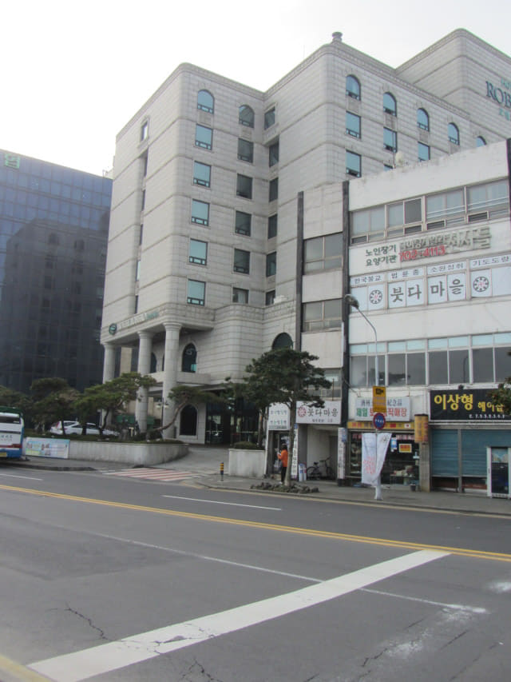
在濟州牧官衙門外閒逛了一會, 恐怕巴士隨時駛來, 便返回巴士站等候。
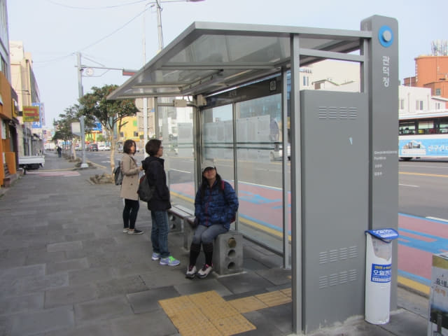
這時巴士站的顯示屏開始出現了70號巴士即將到站的資料, 好像是還有十二分鐘。
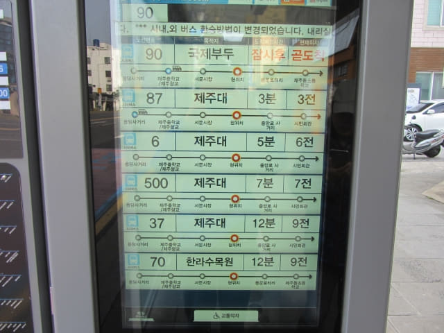
70號巴士約八時四十分駛來靠站。
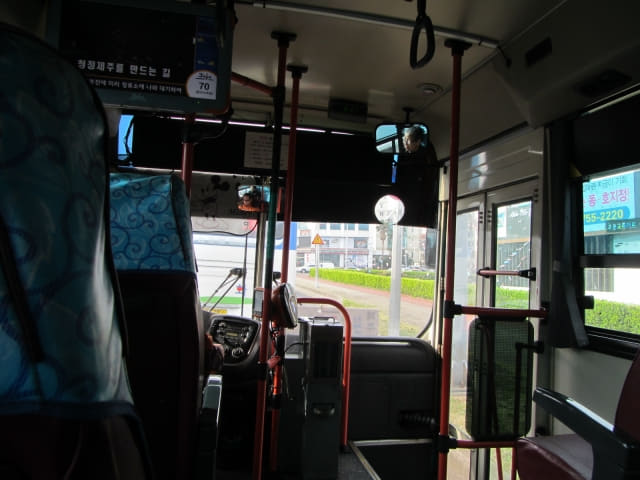
神奇之路 (신비의도로 Mysterious Road)
巴士路線十分迂迴曲折, 速度又慢, 有如觀光巴士, 首先在市區內拐了一大圈, 接著又往機場行一個大運, 然後才施施然正式向神奇之路進發。在地圖上看似不太遠的距離, 足足行駛了一小時多才抵達神奇之路附近的美術館。下了車, 已經是早上九時四十二分, 遠遠超出我的估計!